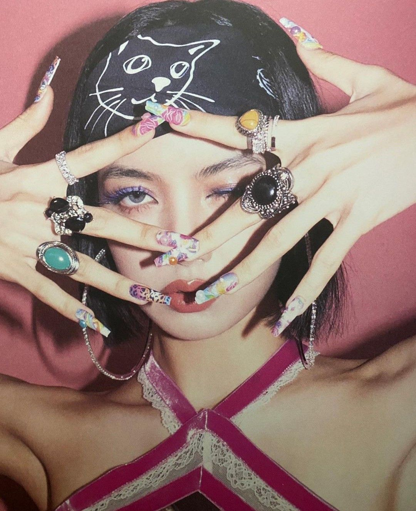
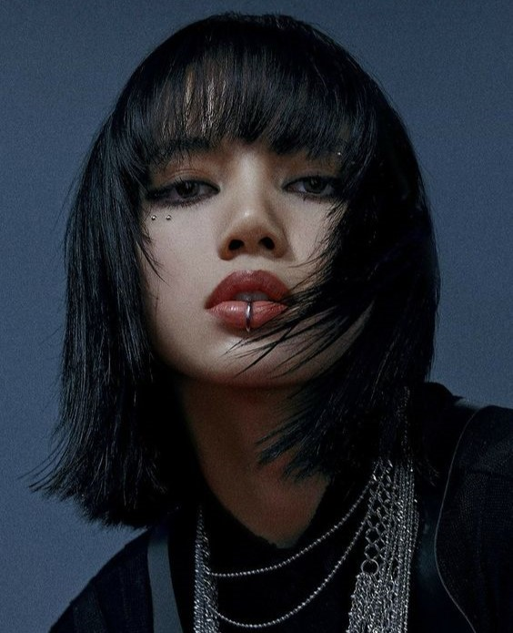
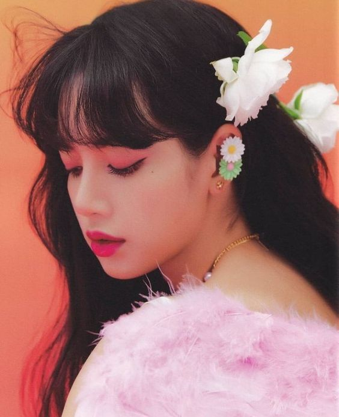

Lisa
Nombre real: ลลิษา มโนบาล / Lalisa Manobal
Nombre de nacimiento: ปราณปรียา มโนบาล / Pranpriya Manobal
Profesión: Rapera, Cantante, Bailarina y Modelo.
Fecha de nacimiento: 27-Marzo-1997 (26 Años)
Lugar de nacimiento: Buriram, Tailandia.
Estatura: 167 cm
Tipo de sangre: O
Signo zodiacal: Aries
Signo zodiacal chino: Buey
Curiosidades
- Posición: Bailarina, Rapera, Vocalista y Maknae
- Idiomas: Tailandés (Lengua materna), Coreano (fluido), Inglés (fluido), Japonés (básico) y Chino (básico).
- Período de entrenamiento: 5 años y 3 meses.
- Religión: Budista.
- Comida favorita: Guisado de papas.
- Instrumentos: Ukelele y guitarra.
- Color favorito: Amarillo
- Modelo a seguir: CL
- Mascotas: Cinco gatos (Leo, Luca, Lily, Louis y Lego) y un perro (Love).
- Cuando viajó a Corea del Sur para convertirse en cantante sólo tenía 14 años.
- Apareció por primera vez en la lista de TC Candler de "Los 100 rostros más hermosos 2016" quedando en el puesto #41; en el 2017 fue ascendida al puesto #15; en el 2018 quedó en el puesto #9; en el 2019 quedó en elpuesto #3.
- El 24 de julio del 2020, Lisa fue presentada como embajadora de la marca Mundial Bvlgari.
- Lalisa se consagró como el MV de un acto en solitario más visto en las primeras 24 horas de estreno (73,6M), tras romper el récord de Taylor Swift (El citado logro le valió un récord mundial de Guinness a la idol tailandesa).
- Es la primera artista de Kpop (solista) en ganar un VMA y al mismo tiempo un EMAs.
- Es embajadora de la marca CELINE.